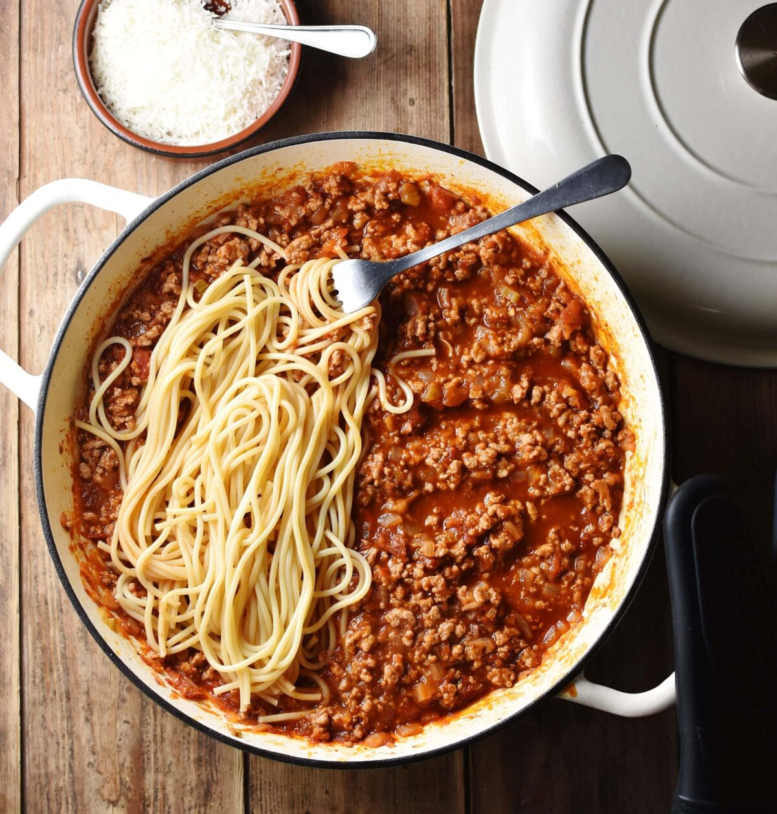

Bolognese

This Bolognese Sauce is rich, thick and has beautiful depth of flavour.
Ingredients
- 1 1/2 tbsp olive oil
- 2 garlic cloves, minced
- 1 onion , finely chopped
- 1 lb / 500g beef mince
- 1/2 cup (125 ml) dry red wine
- 2 beef bouillon cubes
- 800g / 28 oz can crushed tomato
- 2 tbsp tomato paste
- 2 tsp white sugar
- 2 tsp Worcestershire sauce
- 2 dried bay leavesr
- 2 sprigs fresh thyme
- Salt and pepper
To serve
- 400 g / 13 oz spaghetti
- Parmesan cheese
Steps
- Heat oil in a large pot or deep skillet over medium high heat. Add onion and garlic, cook for 3 minutes or until light golden and softened.
- Turn heat up to high and add beef. Cook, breaking it up as your go, until browned.
- Add red wine. Bring to simmer and cook for 1 minute, scraping the bottom of the pot, until the alcohol smell is gone.
- Add remaining ingredients except salt and pepper. Stir, bring to a simmer then turn down to medium so it bubbles gently. Cook for 20 - 30 minutes (no lid), adding water if the sauce gets too thick for your taste. Stir occasionally
- Slow simmer option: really takes this to another level, if you have the time! Add 3/4 cup of water, cover with lid and simmer on very low for 2 - 2.5 hours, stirring every 30 minutes or so.Uncover, simmer 20 minutes to thicken sauce.
- Adjust salt and pepper to taste right at the end. Serve over spaghetti - though if you have the time, I recommend tossing the sauce and pasta per steps below.
Pair with garlic bread.
Use Ragu sauce in lasagna.
See other recipes.